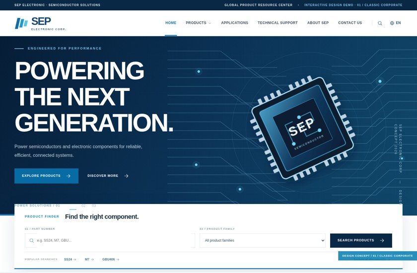
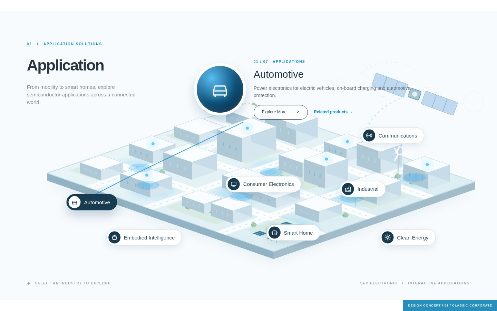

OPEN DEMO A ↗選擇網站視覺方向
建議先比較首頁，再點選 Products 測試規格篩選
NEW / APPLICATION EXPERIENCE
應用領域 · 立體城市互動地圖
七個產業場景，點選後切換連接線與產業介紹；Explore More 開啟詳情、Related Products 可跳至產品中心。三款樣板皆已加入。
開啟互動地圖樣板 A →客戶操作方式
點選任一樣板的「進入網站操作」後，可以依序測試：
- 切換首頁 Banner，捲動至 Application 區塊，點選立體城市上的七個產業標籤。
- 點選頂端 Products 開啟大型分類選單，或直接點擊分類圖片。
- 在 Product Center 輸入 SS24／M7 等料號，測試 Package、VRRM、IF 的條件篩選。
- 點開產品詳細資訊，測試 PDF Datasheet 範例下載或匯出 CSV。
- 使用手機尺寸檢視排版，或點選 EN／繁中 切換示範介面。
注意： 本套件是靜態 HTML/CSS/JavaScript Demo。產品型號與規格為示意，尚未串接正式 WordPress 資料庫；表單不會送信。正式上線前須由 SEP 核對真實規格及原廠 PDF。